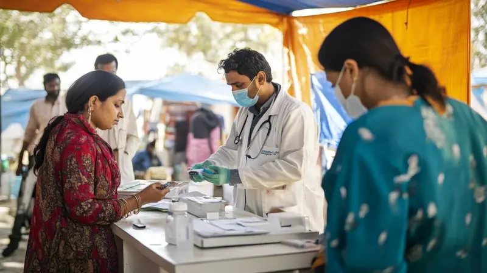

Home / Health Check-ups
Health Check-upsPreventive Healthcare Services for Early Detection and Proactive Care
We offer comprehensive preventive healthcare solutions, including Annual Health Check-ups, Pre-employment Medical Examinations, Food Handler Medical Tests, Onsite Health Screenings, and Pathology and Radiology Services. All medical reports are reviewed by qualified doctors, with consultations and clinical guidance provided whenever required.

Comprehensive Health Screening Across Every Stage of Employment
Annual Health Check-ups
Comprehensive preventive health packages covering essential blood investigations, ECG, vision screening, and doctor consultations to support early detection and overall health monitoring.
Pre-employment Medical Examinations
Structured medical assessments to evaluate candidates' fitness for employment, ensuring timely completion and efficient onboarding.
Onsite Health Screenings
Workplace-based health assessments, including blood pressure, blood glucose, BMI, vision, and dental screenings, for convenient employee health monitoring.
Onsite Medical Camps
Deployment of qualified MBBS and specialist doctors at corporate premises to conduct medical camps and provide accessible healthcare services.
Pathology & Radiology Services
Comprehensive diagnostic services, including pathology investigations and radiology tests, with convenient onsite and home-based sample collection facilities.
Doctor-Reviewed Reports & Consultations
Medical reports reviewed by qualified doctors, with professional interpretation, consultations, and appropriate follow-up recommendations wherever required.

Expert Medical Care, Delivered to Your Workplace
We provide comprehensive onsite healthcare services by deploying qualified MBBS and specialist doctors, along with trained medical technicians and the necessary equipment. Our camps are scheduled around your organisation’s working hours to ensure seamless healthcare access with minimal disruption to business operations.
- Specialist Medical Support: Deployment of experienced specialists based on your employees’ healthcare requirements.
- Flexible Deployment: Customised medical camps designed to accommodate individual teams, departments, or the entire workforce.
- Convenient Scheduling: Flexible appointment slots aligned with workplace schedules to ensure smooth operations.
- Medical Consultations & Follow-ups: Professional consultations and appropriate follow-up guidance for employees requiring further medical attention.
Comprehensive Diagnostic Solutions at Your Convenience
We facilitate a wide range of pathology and radiology services through our network of trusted laboratory and diagnostic partners, ensuring reliable testing, convenient sample collection, and timely delivery of reports. Services are available at corporate premises and employees’ homes for greater accessibility and convenience.
- Pathology Services: Comprehensive blood, urine, and other laboratory investigations, with reports delivered digitally.
- Radiology Services: Access to diagnostic imaging services, including X-rays, ultrasound, and other radiological investigations through our partner diagnostic centres.
- Onsite & Home Sample Collection: Convenient sample collection at workplaces and residences by trained healthcare professionals.
- Timely Reporting: Efficient coordination with diagnostic partners to facilitate timely report delivery and seamless access to diagnostic results.
A Seamless Healthcare Experience for HR Teams and Employees
Our streamlined process ensures convenient coordination, efficient service delivery, and professional medical support at every stage.
Package Selection
We recommend customised health check-up packages based on employees’ age groups, job roles, medical requirements, and occupational health risks.
Scheduling & Coordination
We coordinate appointments and testing schedules, offering employees the flexibility to access services at their workplace, designated diagnostic centres, or their homes.
Health Screening & Diagnostics
All medical examinations, diagnostic tests, and sample collections are conducted by qualified healthcare professionals using appropriate equipment and established protocols.
Medical Review & Follow-up
Medical reports are reviewed by qualified doctors, with professional consultations, interpretation of results, and follow-up recommendations provided wherever necessary.
Frequently Asked Questions
Where can employees undergo health check-ups?
Health check-ups can be organised at your corporate premises through onsite screening programmes, at our partnered diagnostic centres, or through convenient home-based sample collection services.
Will employees receive their medical reports and consultation?
Yes. Every employee receives a digital copy of their medical report. Qualified doctors review the reports, explain the findings, and provide appropriate medical guidance and follow-up recommendations wherever required.
Can you accommodate urgent pre-employment medical examinations?
Absolutely. We facilitate timely scheduling and completion of pre-employment medical examinations to support smooth employee onboarding and minimise delays in joining formalities.
Is fasting required before health check-ups?
Certain blood investigations may require 8–12 hours of fasting. Employees are provided with the necessary test preparation guidelines and instructions in advance to ensure accurate results.
Comprehensive Healthcare Solutions for Your Workforce
Partner with us to provide accessible, reliable, and professionally managed healthcare services for your employees. Share your organisation's requirements, and our team will recommend a customised healthcare programme based on your workforce size, locations, medical requirements, and budget. Connect with us to design the right healthcare solution for your organisation.
- Phone
- +91 91806 06295
- Registered Office
- No. 102, E Block, SLV Karnataka Splendour Apartment, Harinagar Cross, Kothanur, Konanakunte, Bengaluru – 560062, Karnataka